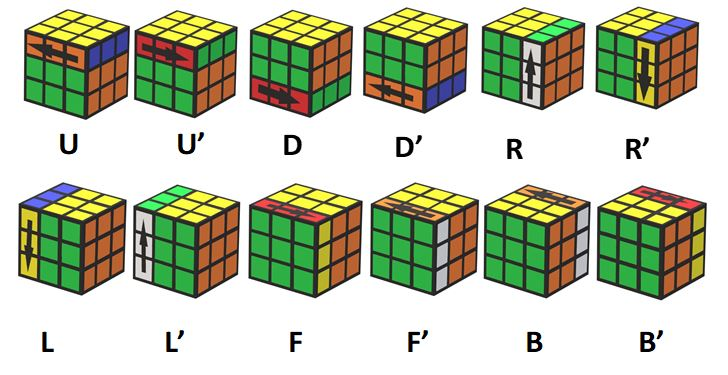

THERE ARE SPECIFIC MOVE TO SOLVE A RUBIK'S THIS IS NESSASERY TO KNOW THEM THIS YOU SHALL MAKE PATTERN ON CUBE OR SOLVE RUBIK'S CUBE
YOU CAN ALSO SEE THESE SIGN - " ' "
FOR EXAMPLE - R AND R'
R = right layer turn up R' = right layer turn down. These all things shown in image
This sign indicates opposite move of the current move like you have turned the right side of the cube then you reverse that particular move
Now you need to know what are the moves name ?
1. F - Front SIDE/LAYER
2. R - Right SIDE/LAYER
3. U/T - Up/Top SIDE/LAYER
4. D - Down SIDE/LAYER
5. R - Right SIDE/LAYER
6. B/D - Bottom/Down SIDE/LAYER
7. B - Back SIDE/LAYER
8. M - Middle SIDE/LAYER
Note - All of these SIDE/LAYERS can be different as well. It's all depends on your cube holding angle and position.
These are the moves. It is very important to remember them, without this you shall not be able to learn the cube's algorithm well
For Better Under standing :-

1. RIGHT ALGORYTHEM
MOVE - R U R' U'
2. EDGE FIXER
MOVE - R U R' U' F' U' F'
3. CROSS MAKER
MOVE - F R U R' U'
4. CORNER FIXER
MOVE - L' R U R' U' L U R U' R'
5. CENTER MATCHER
MOVE - R U R' U R U U R'